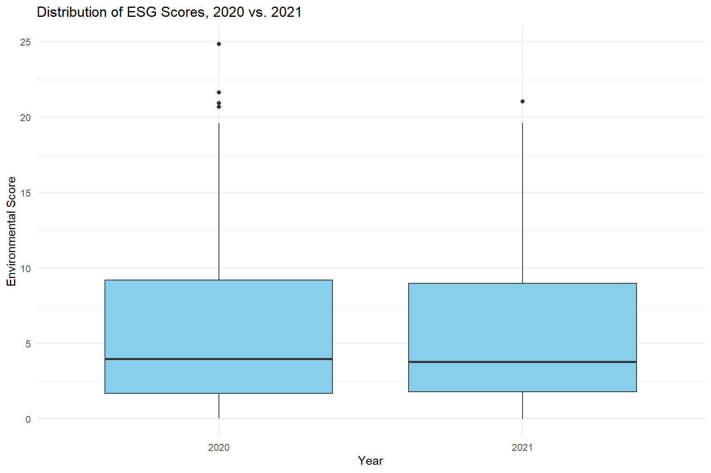
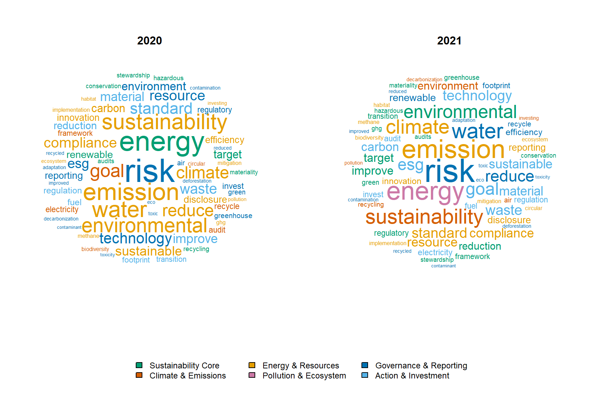
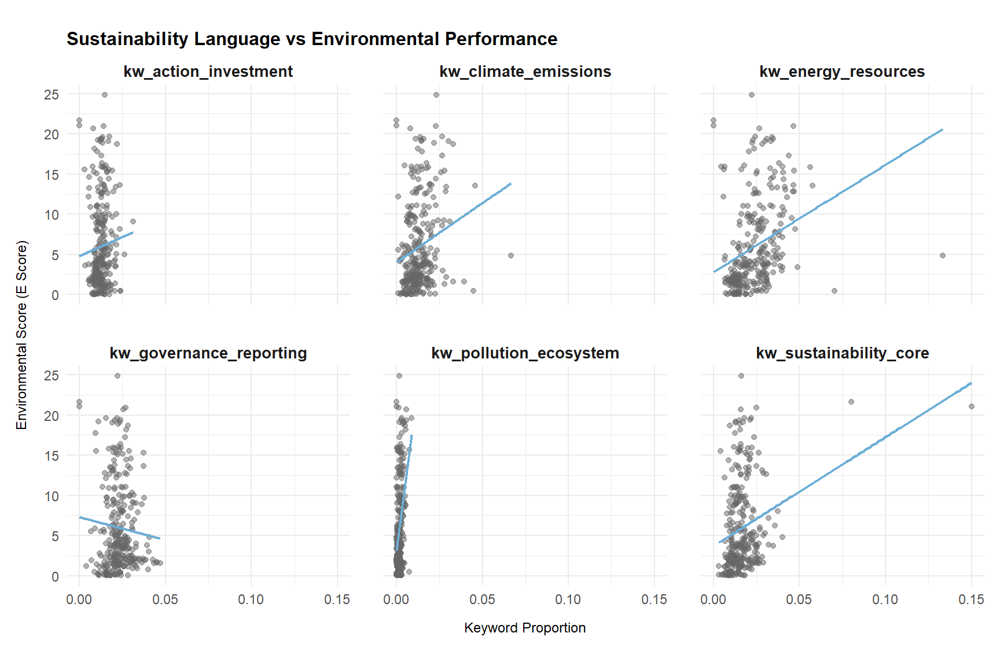
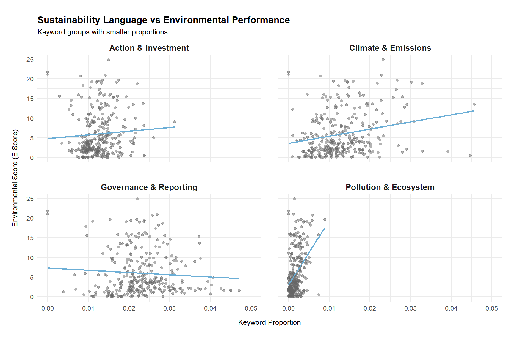
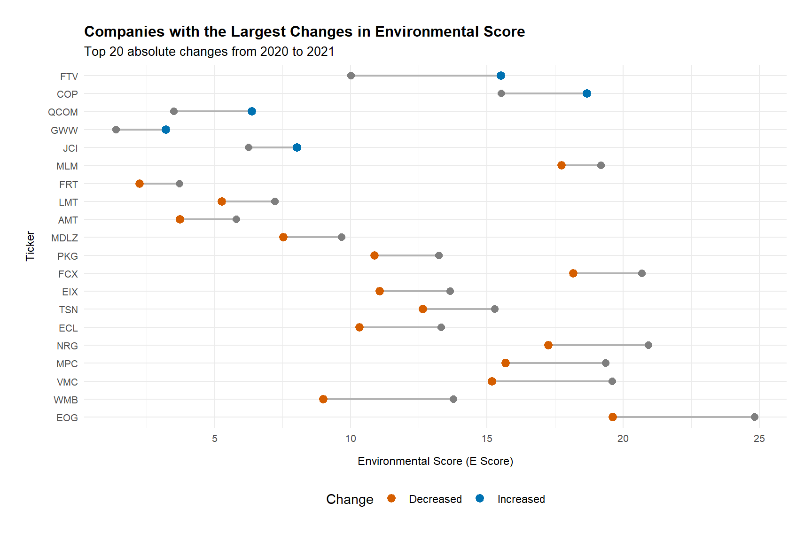

library(tidytext)
df_raw <- read_csv("C:/Users/syknd/OneDrive/ドキュメント/Capstone/preprocessed_content.csv")Does Sustainability Communication Reflect ESG Performance?
DANL 310: Data Visualization and Presentation
Project Overview
Over the past decade, sustainability has become one of the most important themes in corporate strategy and public communication. Companies increasingly publish ESG reports, climate commitments, carbon reduction targets, and sustainability initiatives to demonstrate environmental responsibility to investors, consumers, and regulators. However, as sustainability communication becomes more common, concerns about greenwashing have also intensified.
Greenwashing occurs when firms present themselves as environmentally responsible through marketing and reporting while their actual environmental performance does not fully support those claims. As a result, an important question emerges:
Do firms that communicate more about sustainability actually perform better environmentally?
This project explores the relationship between sustainability communication and environmental ESG performance among S&P 500 firms between 2020 and 2021. Rather than focusing only on financial outcomes or formal statistical modeling, the project uses data transformation, descriptive statistics, and visualization to tell a broader story about how firms communicate sustainability and whether those communications align with measurable environmental performance.
This question matters for several reasons. First, sustainability communication increasingly influences investor decisions, consumer trust, and corporate reputation. Second, regulators and stakeholders are placing greater pressure on firms to provide transparent and credible ESG disclosures. Finally, understanding the gap between communication and performance can help identify patterns that may suggest greenwashing or inconsistent sustainability reporting practices.
Guiding Question
To what extent does sustainability communication in corporate ESG reports reflect actual environmental performance, and where do potential gaps suggest greenwashing or differences in reporting strategies among firms?
Background and Context
Many large companies publish annual sustainability or ESG reports alongside their financial reports. These reports typically describe their environmental initiatives, climate-related goals, carbon emissions strategies, renewable energy usage, waste reduction efforts, and other sustainability activities.
ESG stands for Environmental, Social, and Governance, a framework commonly used to evaluate corporate responsibility and long-term sustainability practices. In this project, the primary focus is the environmental component of ESG, which relates to how companies manage issues such as climate change, pollution, energy consumption, emissions, and resource conservation.
To measure environmental performance, ESG rating organizations assign environmental scores based on factors such as environmental policies, disclosure practices, emissions management, and sustainability-related risks. Higher environmental scores generally indicate stronger environmental performance or stronger environmental management practices.
The project also analyzes the language used in corporate sustainability reports. Because these reports contain large amounts of text, sustainability communication must first be transformed into measurable data. To do this, sustainability-related words were grouped into categories such as:
- climate & emissions
- energy & resources
- governance & reporting
- sustainability core language
The frequency of these keywords was then measured to estimate how heavily firms emphasized different sustainability topics in their reports.
Comparing keyword usage with environmental ESG scores makes it possible to examine whether firms that communicate more extensively about sustainability also tend to demonstrate stronger environmental performance. This approach allows sustainability communication itself to become measurable and comparable across firms and years.
Increasing investor attention, climate discussions, and pressure for standardized ESG disclosure encouraged many companies to strengthen sustainability communication and reporting practices.
Data and Sources
This analysis combines two datasets containing information on S&P 500 companies during 2020 and 2021. After cleaning and merging the data, the final panel dataset contains 316 observations representing 158 firms observed across two years.
S&P 500 Firms ESG Sustainability Reports Dataset
Provider: Kaggle
Source Link: https://www.kaggle.com/datasets/jaidityachopra/esg-sustainability-reports-of-s-and-p-500-companies
Date Accessed: March 19, 2026
This dataset contains sustainability report text and ESG-related information. Important variables include:
- Ticker: Company stock ticker symbol
- e_score: Environmental ESG score
- preprocessed_content: Cleaned sustainability report text after preprocessing and stop-word removal
The environmental ESG score serves as the primary measure of environmental performance throughout the project. The preprocessed_content variable was used to analyze how firms communicate sustainability-related topics in their reports. Specifically, sustainability-related keyword groups such as climate_emissions, energy_resources, governance_reporting, and sustainability core language were created, and the frequency of these keywords was identified and aggregated from each company’s preprocessed report text. This allowed the project to quantify sustainability communication and compare it across firms and years.
Financial and Industry Dataset
Provider: Data retrieved with assistance from the course instructor and supplemented using financial data collected through Python (Spyder)
Date Accessed: Spring 2026
The second dataset contains company-level financial and industry information, including:
- GICSSector
- GICSSubIndustry
- TotalReturnPct
- Assets
- StockholdersEquity
- OperatingCashFlow
These variables provide additional context about company characteristics and industry differences.
The unit of observation is a firm-year observation, meaning each row represents one company in one year.
Data Preparation and Transformation
Loading Packages and Raw Data
The analysis began by loading the necessary R packages and importing the ESG sustainability report dataset. The tidyverse package was used for data cleaning, joining, grouping, and reshaping, while tidytext was used for text tokenization and stop-word removal.
Filtering and Preparing the ESG Report Data
I selected ESG report observations from 2020 and 2021. These two years were used because they provided the strongest overlap between the sustainability report dataset and the financial dataset.
df_raw_2019 <- df_raw %>%
filter(year == 2019) %>%
select(ticker, year)
df_raw_2020 <- df_raw %>%
filter(year == 2020) %>%
select(ticker, year)
df_raw_2021 <- df_raw %>%
filter(year == 2021) %>%
select(ticker, year)
df_raw_2020_1 <- df_raw %>%
filter(year == 2020)
df_raw_2021_1 <- df_raw %>%
filter(year == 2021)
df_raw_panel_20_21 <- bind_rows(df_raw_2020_1, df_raw_2021_1) %>%
rename(Ticker = ticker) %>%
arrange(Ticker, year)
df_raw_panel_19_21 <- df_raw_2019 %>%
inner_join(df_raw_2020, by = "ticker") %>%
inner_join(df_raw_2021, by = "ticker") Preparing the Financial and Industry Data
The financial dataset contained company-level financial and industry information for 2020 and 2021. I selected the variables most relevant to the project and added a year variable to each dataset before combining them.
financial_20 <- read_csv("C:/Users/syknd/OneDrive/ドキュメント/Capstone/sp500_2020_financial_performance.csv")
financial_21 <- read_csv("C:/Users/syknd/OneDrive/ドキュメント/Capstone/sp500_2021_financial_performance.csv")
financial_20_1 <- financial_20 %>%
select(Ticker, GICSSector, GICSSubIndustry,
TotalReturnPct, Assets, StockholdersEquity,
OperatingCashFlow) %>%
drop_na() %>%
mutate(year = 2020)
financial_21_1 <- financial_21 %>%
select(Ticker, GICSSector, GICSSubIndustry,
TotalReturnPct, Assets, StockholdersEquity,
OperatingCashFlow) %>%
drop_na() %>%
mutate(year = 2021)
financial_20_21_1 <- bind_rows(financial_20_1, financial_21_1) %>%
arrange(Ticker, year)These variables provided industry and financial context for each firm, allowing the sustainability communication data to be connected with broader company characteristics.
Joining the ESG and Financial Datasets
The ESG sustainability report data and the financial dataset were joined by company ticker and year. This created a company-year dataset that included ESG scores, sustainability report text, industry classifications, and financial variables.
df_merged <- df_raw_panel_20_21 %>%
left_join(financial_20_21_1, by = c("Ticker", "year")) %>%
arrange(Ticker, year)After joining the datasets, I kept only firms with observations in both 2020 and 2021. This created a balanced two-year panel, meaning each company appeared once in 2020 and once in 2021.
df_merged <- df_merged %>%
group_by(Ticker) %>%
filter(n_distinct(year) == 2) %>%
ungroup()This filtering step was important because the project compares communication and environmental performance across the same firms over time.
Creating Sustainability Keyword Groups
To measure sustainability communication, I created several keyword groups related to different sustainability themes. These groups allowed the text in each company’s sustainability report to be transformed into measurable variables.
kw_sustainability_core <- c(
"sustainability", "sustainable", "esg", "environment",
"environmental", "eco", "ecofriendly", "eco-friendly",
"green", "stewardship"
)
kw_climate_emissions <- c(
"climate", "carbon", "emission", "emissions",
"greenhouse", "ghg", "netzero", "net-zero",
"decarbonization", "decarbonisation",
"methane", "footprint"
)
kw_energy_resources <- c(
"energy", "renewable", "renewables", "electricity",
"fuel", "efficiency", "water", "waste",
"recycling", "recycle", "recycled", "circular",
"material", "materials", "resource", "resources",
"conservation"
)
kw_pollution_ecosystem <- c(
"pollution", "biodiversity", "ecosystem", "ecosystems",
"habitat", "habitats", "deforestation", "air",
"contamination", "contaminant", "contaminants",
"toxic", "toxicity", "hazardous"
)
kw_governance_reporting <- c(
"disclosure", "disclosures", "reporting",
"target", "targets", "goal", "goals",
"compliance", "regulation", "regulations",
"regulatory", "standard", "standards",
"framework", "frameworks", "audit", "audits",
"risk", "risks", "materiality"
)
kw_action_investment <- c(
"reduce", "reduces", "reduced", "reducing",
"reduction", "reductions", "invest", "invests",
"invested", "investing", "transition", "transitions",
"improve", "improves", "improved", "improving",
"innovation", "innovations", "technology",
"technologies", "mitigation", "adaptation",
"implementation"
)These groups were designed to capture different types of sustainability communication. For example, climate-related terms measure discussion of emissions and carbon issues, while governance/reporting terms capture disclosure, compliance, and ESG reporting language.
Cleaning and Tokenizing Report Text
The preprocessed_content variable contained the cleaned report text, but additional cleaning was applied to make the text more consistent. HTML tags, URLs, HTML entities, punctuation, numbers, and extra spaces were removed. The text was then tokenized into individual words.
df_words <- df_merged %>%
mutate(
preprocessed_content = str_remove_all(preprocessed_content, "<[^>]+>"),
preprocessed_content = str_remove_all(preprocessed_content, "http[s]?://\\S+"),
preprocessed_content = str_remove_all(preprocessed_content, "&|<|>"),
preprocessed_content = str_replace_all(preprocessed_content, "[^a-z\\s]", " "),
preprocessed_content = str_squish(preprocessed_content)
) %>%
unnest_tokens(word, preprocessed_content) %>%
anti_join(stop_words, by = "word") %>%
filter(str_detect(word, "[a-z]")) %>%
count(Ticker, year, word) %>%
group_by(Ticker, year) %>%
mutate(prop = n / sum(n)) %>%
ungroup() %>%
arrange(Ticker, year, -prop)This step transformed each sustainability report into a word-level dataset. Each row represented one word used by a specific company in a specific year, along with its frequency and proportion within that company-year report.
Assigning Words to Keyword Groups
After tokenizing the text, I assigned each word to one of the sustainability keyword groups. Words that did not belong to one of the selected sustainability categories were labeled as kw_other.
df_words_selected <- df_words %>%
mutate(
concept_group = case_when(
word %in% kw_sustainability_core ~ "kw_sustainability_core",
word %in% kw_climate_emissions ~ "kw_climate_emissions",
word %in% kw_energy_resources ~ "kw_energy_resources",
word %in% kw_pollution_ecosystem ~ "kw_pollution_ecosystem",
word %in% kw_governance_reporting ~ "kw_governance_reporting",
word %in% kw_action_investment ~ "kw_action_investment",
TRUE ~ "kw_other"
)
)
df_concept_prop <- df_words_selected %>%
group_by(Ticker, year, concept_group) %>%
summarize(
group_n = sum(n),
.groups = "drop"
) %>%
group_by(Ticker, year) %>%
mutate(
concept_prop = group_n / sum(group_n)
) %>%
ungroup() %>%
arrange(Ticker, year, desc(concept_prop))
df_change <- df_concept_prop %>%
select(Ticker, year, concept_group, concept_prop) %>%
pivot_wider(
names_from = year,
values_from = concept_prop
) This transformation made it possible to measure not only how much firms talked about sustainability overall, but also which specific sustainability themes they emphasized.
Creating Keyword Proportion Variables
Because reports differ in length, raw keyword counts could be misleading. A company with a longer report might use more sustainability keywords simply because the report contains more words overall. To make comparisons fair, I divided keyword counts by the total number of words in each company-year report.
df_total_words <- df_words %>%
group_by(Ticker, year) %>%
summarize(
total_words = sum(n, na.rm = TRUE),
.groups = "drop"
)
df_combined_concept <- df_words_selected %>%
group_by(Ticker, year, concept_group) %>%
summarize(
keyword_total = sum(n),
.groups = "drop"
)
df_combined_prop <- df_combined_concept %>%
left_join(df_total_words, by = c("Ticker", "year")) %>%
mutate(
combined_prop = keyword_total / total_words
) %>%
arrange(Ticker, year, combined_prop)The resulting combined_prop variable measures the proportion of report words that belonged to each sustainability keyword group. This became the main measure of sustainability communication intensity.
Reshaping the Data for Visualization
The keyword proportion data were reshaped from long format to wide format so that each keyword group became its own variable. Missing keyword proportions were replaced with zero because a missing value meant that a company did not use words from that keyword group in that year.
library(plm)
library(lmtest)
library(sandwich)
library(stargazer)
financials <- bind_rows(financial_20 %>% mutate(year = 2020),
financial_21 %>% mutate(year = 2021)) %>%
relocate(year, .after = Ticker) %>%
select(-YahooTicker, -Company, -(Headquarters:EndClose),
-(PriceReturnPct:FiscalYear))
financials_sum <- financials %>%
skimr::skim() %>%
filter(complete_rate > .8)
financials_selected <- financials %>%
select(financials_sum$skim_variable)
df_raw_panel <- df_raw %>%
filter(year %in% c(2019, 2020, 2021),
ticker %in% df_raw_panel_19_21$ticker)
df_outcomes <- df_raw_panel %>%
select(ticker, year, e_score:total_score) %>%
rename(Ticker = ticker)
df <- df_combined_prop %>%
select(-keyword_total, -total_words) %>%
mutate(combined_prop = ifelse(is.na(combined_prop), 0, combined_prop)) %>%
pivot_wider(names_from = "concept_group",
values_from = "combined_prop") %>%
left_join(financials_selected,
by = c("Ticker", "year")) %>%
left_join(df_outcomes,
by = c("Ticker", "year"))Then, missing values in keyword group variables were replaced with zero.
df_sum <- df %>%
skimr::skim()
df_panel <- pdata.frame(df, index = c("Ticker", "year")) %>%
mutate(
kw_pollution_ecosystem = ifelse(is.na(kw_pollution_ecosystem),
0, kw_pollution_ecosystem),
kw_climate_emissions = ifelse(is.na(kw_climate_emissions),
0, kw_climate_emissions),
kw_action_investment = ifelse(is.na(kw_action_investment),
0, kw_action_investment),
kw_sustainability_core = ifelse(is.na(kw_sustainability_core),
0, kw_sustainability_core),
kw_energy_resources = ifelse(is.na(kw_energy_resources),
0, kw_energy_resources),
kw_governance_reporting = ifelse(is.na(kw_governance_reporting),
0, kw_governance_reporting),
kw_other = ifelse(is.na(kw_other),
0, kw_other),
)This created a clean analysis-ready dataset where each row represented one firm in one year.
Creating the Final Analysis Dataset
The final dataset selected the main variables needed for visualization and descriptive analysis. I removed the kw_other category because the project focuses on sustainability-related keyword groups, not all remaining words.
df_panel_selected_90 <- df_panel %>%
select(Ticker:GICSSubIndustry, -kw_other,
TotalReturnPct, Assets, StockholdersEquity, OperatingCashFlow,
e_score:total_score) %>%
drop_na() %>%
group_by(Ticker) %>%
filter(n() == 2) After this step, the final dataset contained 316 observations, representing 158 companies observed in both 2020 and 2021.
Descriptive Statistics
Before examining the relationship between sustainability communication and environmental performance, I calculated descriptive statistics for environmental ESG scores by year.
df_panel_selected_90 %>%
group_by(year) %>%
summarize(
min = min(e_score, na.rm = TRUE),
max = max(e_score, na.rm = TRUE),
mean = mean(e_score, na.rm = TRUE),
sd = sd(e_score, na.rm = TRUE),
median = median(e_score, na.rm = TRUE)
)# A tibble: 2 × 6
year min max mean sd median
<fct> <dbl> <dbl> <dbl> <dbl> <dbl>
1 2020 0.03 24.8 6.12 5.76 3.97
2 2021 0.01 21.0 5.83 5.34 3.8 The descriptive statistics show that the average environmental ESG score was relatively stable between 2020 and 2021. The mean decreased slightly from 6.12 to 5.83, and the median also decreased from 3.97 to 3.78.
However, the large standard deviations and wide range between minimum and maximum values show that environmental performance varied substantially across companies. Some firms had very high environmental scores, while others remained close to zero. This variation is important because it creates the foundation for the main project question: if firms differ meaningfully in environmental performance, then we can examine whether their sustainability communication reflects those differences.
I also visualized this distribution using a boxplot.
ggplot(df_panel_selected_90,
aes(x = factor(year), y = e_score)) +
geom_boxplot(fill = "skyblue") +
labs(
x = "Year",
y = "Environmental Score",
title = "Distribution of ESG Scores, 2020 vs. 2021"
) +
theme_minimal()
The boxplot shows that both years have many high-value outliers, meaning that a small number of firms had much higher environmental scores than most companies. This reinforces the idea that environmental ESG performance is uneven across firms, making it meaningful to investigate whether sustainability communication aligns with actual performance.
Data Visualization and Storytelling
Word Cloud: What Sustainability Topics Do Firms Emphasize?
library(wordcloud)
library(RColorBrewer)
library(dplyr)
category_colors <- c(
"Sustainability Core" = "#009E73",
"Climate & Emissions" = "#D55E00",
"Energy & Resources" = "#E69F00",
"Pollution & Ecosystem" = "#CC79A7",
"Governance & Reporting" = "#0072B2",
"Action & Investment" = "#56B4E9"
)
make_wc_data <- function(data, target_year) {
data %>%
filter(year == target_year,
concept_group != "kw_other") %>%
group_by(word, concept_group) %>%
summarise(freq = sum(n, na.rm = TRUE), .groups = "drop") %>%
mutate(
category = case_when(
concept_group == "kw_sustainability_core" ~ "Sustainability Core",
concept_group == "kw_climate_emissions" ~ "Climate & Emissions",
concept_group == "kw_energy_resources" ~ "Energy & Resources",
concept_group == "kw_pollution_ecosystem" ~ "Pollution & Ecosystem",
concept_group == "kw_governance_reporting" ~ "Governance & Reporting",
concept_group == "kw_action_investment" ~ "Action & Investment"
),
color = category_colors[category]
) %>%
slice_max(freq, n = 80)
}
df_wc_2020 <- make_wc_data(df_words_selected, 2020)
df_wc_2021 <- make_wc_data(df_words_selected, 2021)
layout(
matrix(c(1, 2,
3, 3), nrow = 2, byrow = TRUE),
heights = c(4, 0.7)
)
par(mar = c(1, 1, 3, 1))
set.seed(123)
wordcloud(
words = df_wc_2020$word,
freq = df_wc_2020$freq,
max.words = 80,
min.freq = 5,
scale = c(3.5, 0.5),
random.order = FALSE,
rot.per = 0,
colors = df_wc_2020$color
)
title("2020", line = -1)
par(mar = c(1, 1, 3, 1))
set.seed(123)
wordcloud(
words = df_wc_2021$word,
freq = df_wc_2021$freq,
max.words = 80,
min.freq = 5,
scale = c(3.5, 0.5),
random.order = FALSE,
rot.per = 0,
colors = df_wc_2021$color
)
title("2021", line = -1)
par(mar = c(0, 0, 0, 0))
plot.new()
legend(
"center",
legend = names(category_colors),
fill = category_colors,
ncol = 3,
cex = 0.9,
bty = "n"
)
The word cloud provides the starting point of the story by showing which sustainability-related terms appeared most frequently in corporate sustainability reports. Across both 2020 and 2021, firms repeatedly emphasized terms such as “risk,” “energy,” “emission,” “sustainability,” “water,” “climate,” and “environmental.” This indicates that companies consistently framed sustainability around environmental risk, emissions, energy use, water management, and broader ESG responsibility.
However, the two years also show subtle differences. In 2020, words such as “water,” “reduce,” “renewable,” and “technology” appear, suggesting stronger emphasis on operational environmental management. In 2021, terms such as “ESG,” “standard,” “compliance,” “material,” and “reporting” become more visible. This suggests that corporate sustainability communication may have shifted toward more formal ESG disclosure language.
This matters because the project is not only about whether firms discuss sustainability, but also about how they discuss it. The word cloud suggests that sustainability communication is partly about environmental action, but also increasingly about reporting, standards, and compliance. This creates the key question for the next figures: does this communication reflect actual environmental performance?
Scatter Plot: Does Sustainability Language Align with Environmental Performance?
df_plot <- df_panel_selected_90 %>%
mutate(
text_total = kw_pollution_ecosystem +
kw_climate_emissions +
kw_action_investment +
kw_sustainability_core +
kw_energy_resources +
kw_governance_reporting
)
df_plot <- df_panel_selected_90 %>%
select(
Ticker, e_score,
kw_pollution_ecosystem,
kw_climate_emissions,
kw_action_investment,
kw_sustainability_core,
kw_energy_resources,
kw_governance_reporting
) %>%
pivot_longer(
cols = starts_with("kw_"),
names_to = "keyword_group",
values_to = "proportion"
)
ggplot(df_plot, aes(x = proportion, y = e_score)) +
geom_point(alpha = 0.5, color = "grey40") +
geom_smooth(method = "lm", se = FALSE, color = "#6BAED6", linewidth = 0.8) +
facet_wrap(~ keyword_group, scales = "fixed") +
scale_x_continuous(labels = scales::label_number(trim = TRUE)) +
labs(
title = "Sustainability Language vs Environmental Performance",
x = "Keyword Proportion",
y = "Environmental Score (E Score)"
) +
theme_minimal() +
theme(
panel.spacing = unit(1.5, "lines"),
strip.text = element_text(size = 10, face = "bold"),
plot.title = element_text(size = 12, face = "bold"),
axis.title.x = element_text(size = 9, margin = margin(t = 10)),
axis.title.y = element_text(size = 9, margin = margin(r = 10)),
plot.margin = margin(t = 20, r = 10, b = 20, l = 10)
)
This figure examines the relationship between different categories of sustainability language and firms’ environmental ESG scores. Overall, most keyword groups show positive relationships, suggesting that firms emphasizing sustainability topics more heavily tend to have stronger environmental performance. In particular, sustainability core language, energy & resources, climate & emissions, and pollution & ecosystem language appear positively associated with environmental scores.
However, the strength of these relationships varies across categories. Governance & reporting language shows a slightly negative trend, indicating that discussing reporting frameworks, compliance, and disclosure practices does not necessarily correspond to stronger environmental outcomes. This suggests that not all sustainability communication reflects actual environmental performance equally.
At the same time, substantial dispersion remains across all plots, indicating that communication intensity alone cannot fully explain environmental ESG performance.
Scatter Plot : Zoomed-In View
df_plot_clean <- df_plot %>%
mutate(
keyword_group = recode(
keyword_group,
kw_action_investment = "Action & Investment",
kw_governance_reporting = "Governance & Reporting",
kw_climate_emissions = "Climate & Emissions",
kw_pollution_ecosystem = "Pollution & Ecosystem",
kw_sustainability_core = "Core Sustainability",
kw_energy_resources = "Energy & Resources",
kw_other = "Other"
)
)
plot_adjusted <- df_plot_clean %>%
filter(keyword_group %in% c(
"Action & Investment",
"Governance & Reporting",
"Climate & Emissions",
"Pollution & Ecosystem"
)) %>%
ggplot(aes(x = proportion, y = e_score)) +
geom_point(alpha = 0.5, color = "grey40") +
geom_smooth(method = "lm", se = FALSE, color = "#6BAED6", linewidth = 0.8) +
facet_wrap(~ keyword_group, scales = "fixed") +
scale_x_continuous(
limits = c(0, 0.05),
labels = scales::label_number(trim = TRUE)
) +
labs(
title = "Sustainability Language vs Environmental Performance",
subtitle = "Keyword groups with smaller proportions",
x = "Keyword Proportion",
y = "Environmental Score (E Score)"
) +
theme_minimal() +
theme(
panel.spacing = unit(1.5, "lines"),
strip.text = element_text(size = 10, face = "bold"),
plot.title = element_text(size = 12, face = "bold"),
plot.subtitle = element_text(size = 9),
axis.title.x = element_text(size = 9, margin = margin(t = 10)),
axis.title.y = element_text(size = 9, margin = margin(r = 10)),
axis.text = element_text(size = 8),
plot.margin = margin(t = 20, r = 15, b = 20, l = 15)
)
plot_adjusted
The figure provides a closer look at keyword groups with smaller proportions, allowing patterns hidden in the broader visualization to become more visible.
The zoomed-in view reinforces the positive relationships observed for climate & emissions, action & investment, and pollution & ecosystem language. Firms discussing concrete environmental issues such as emissions reduction, pollution, and ecosystem management tend to have stronger environmental scores.
In contrast, governance & reporting language continues to show little or even slightly negative association with environmental performance. This distinction suggests that firms emphasizing reporting practices, standards, or compliance may not necessarily demonstrate stronger measurable environmental outcomes.
This finding raises questions about whether some sustainability communication reflects genuine environmental action while other forms may function more as reporting strategy or reputational positioning.
Dumbbell Chart: How Did Environmental Performance Change Over Time?
df_dumbbell <- df_panel_selected_90 %>%
ungroup() %>%
select(Ticker, year, e_score) %>%
filter(year %in% c(2020, 2021)) %>%
pivot_wider(
names_from = year,
values_from = e_score,
names_prefix = "e_score_"
) %>%
drop_na(e_score_2020, e_score_2021) %>%
mutate(
change = e_score_2021 - e_score_2020,
direction = ifelse(change >= 0, "Increased", "Decreased")
)
df_dumbbell_top20 <- df_dumbbell %>%
slice_max(abs(change), n = 20)
ggplot(df_dumbbell_top20,
aes(y = reorder(Ticker, change))) +
geom_segment(
aes(x = e_score_2020,
xend = e_score_2021,
yend = reorder(Ticker, change)),
color = "grey70",
linewidth = 0.8
) +
geom_point(aes(x = e_score_2020),
color = "grey50",
size = 2.5) +
geom_point(aes(x = e_score_2021,
color = direction),
size = 2.8) +
scale_color_manual(
values = c("Increased" = "#0072B2",
"Decreased" = "#D55E00")
) +
labs(
title = "Companies with the Largest Changes in Environmental Score",
subtitle = "Top 20 absolute changes from 2020 to 2021",
x = "Environmental Score (E Score)",
y = "Ticker",
color = "Change"
) +
theme_minimal() +
theme(
plot.title = element_text(size = 12, face = "bold"),
plot.subtitle = element_text(size = 10),
axis.title.x = element_text(size = 9, margin = margin(t = 10)),
axis.title.y = element_text(size = 9, margin = margin(r = 10)),
axis.text = element_text(size = 8),
legend.position = "bottom",
plot.margin = margin(20, 20, 20, 20)
)
The dumbbell chart shifts the story from communication patterns to actual changes in environmental performance. It shows the top 20 firms with the largest absolute changes in environmental scores between 2020 and 2021.
Some companies, such as FTV, COP, QCOM, GWW, and JCI, experienced noticeable improvements. Others, such as EOG, WMB, VMC, MPC, NRG, and FCX, experienced declines. This shows that environmental performance is dynamic rather than fixed.
This matters for the guiding question because sustainability communication and environmental performance may not change at the same speed. A company may improve its environmental performance before its reporting language fully reflects that improvement. Alternatively, a company may continue using strong sustainability language even while its environmental score declines.
The dumbbell chart therefore adds an important caution to the analysis. A single year of sustainability communication may not fully capture the direction of a company’s environmental progress. To evaluate whether communication reflects performance, stakeholders should consider both the content of ESG reports and changes in environmental performance over time.
The broader implication is that greenwashing cannot be evaluated only by counting sustainability words. A more credible evaluation requires comparing communication with measurable outcomes and tracking whether those outcomes improve or decline over time.
Shiny App
The Shiny app and dashboard provide an interactive way to explore the relationship between sustainability communication (“talk”) and actual ESG environmental performance (“walk”) across firms and industries. Users can filter results by sector, year, and sustainability language category to examine patterns in ESG scores and sustainability-related reporting.
The dashboard includes:
Overview tab: Introduces the project question and explains the motivation, particularly the potential gap between sustainability claims and environmental performance (possible greenwashing).
Summary tab: Displays descriptive statistics and compares average environmental scores across sectors.
Talk vs. Walk tab: Shows interactive scatterplots of sustainability language versus environmental scores, helping users assess whether firms with stronger sustainability messaging also demonstrate stronger ESG outcomes.
Keyword Comparison tab: Compares average sustainability language usage across sectors for different sustainability themes.
Data tab: Provides an interactive table of the filtered dataset for direct inspection.
Dashboard
- Dashboard: http://localhost:7337/#data
The dashboard allows users to interactively explore patterns between sustainability-related language in corporate reports and ESG performance across firms and sectors. Rather than presenting only static results, the dashboard enables users to investigate the data through multiple visual summaries and comparisons.
The Overview section provides high-level metrics, including the number of companies, observations, sectors, and average environmental scores, helping users quickly understand the dataset’s scope. It also includes an interactive scatterplot showing the relationship between sustainability language and environmental performance, where users can hover over observations to view firm-specific details such as ticker, sector, year, and ESG scores.
The Sector Patterns section helps users compare industries by visualizing average environmental scores and sustainability language usage across sectors. These comparisons make it easier to identify sectors with stronger environmental performance or higher levels of sustainability communication.
The ESG Breakdown section provides a more detailed comparison of average Environmental, Social, and Governance scores by sector, allowing users to explore differences in ESG dimensions across industries rather than focusing only on environmental performance.
Finally, the Data section offers an interactive table where users can browse the underlying dataset directly, including scrolling, searching, and viewing observations used in the analysis.
Connecting the Dots
The descriptive statistics, text transformations, and visualizations together suggest that sustainability communication and environmental performance are related, but not always aligned. The descriptive statistics and boxplots show substantial variation in environmental ESG scores across firms, despite relatively stable averages between 2020 and 2021. This variation creates the foundation for examining whether firms with stronger sustainability language also demonstrate stronger environmental performance.
The text analysis transforms sustainability reports into measurable keyword categories, revealing a shift from operational environmental terms (e.g., energy, emissions, water) toward ESG reporting and compliance language over time. This suggests companies increasingly emphasize disclosure practices in sustainability communication.
The strongest pattern appears in the scatterplots: firms using more climate, emissions, pollution, and sustainability-focused language generally tend to have higher environmental scores. However, governance & reporting language shows weak or slightly negative relationships with environmental performance, suggesting that discussing ESG frameworks or compliance does not necessarily correspond to stronger environmental outcomes.
The dumbbell chart further shows that environmental performance changes over time, with some firms improving while others decline. This highlights that sustainability communication and actual performance may evolve at different speeds.
Overall, the findings suggest that sustainability language alone is not enough to evaluate corporate environmental responsibility. Stakeholders should compare sustainability communication with measurable ESG outcomes over time to better distinguish genuine environmental progress from potential greenwashing.
Discussion
The findings suggest that companies using more sustainability-related language—especially around climate, emissions, pollution, and environmental action—tend to have higher environmental ESG scores. This pattern is consistent with the idea that firms emphasizing concrete environmental topics may also demonstrate stronger environmental performance, although the relationship is not strong enough to imply causation.
A notable result is that governance & reporting language shows little or slightly negative association with environmental scores. One possible explanation is that firms increasingly emphasize ESG disclosure and compliance regardless of actual environmental performance. This raises questions about whether some sustainability communication reflects genuine action or primarily reporting practices.
The comparison over time also shows that environmental performance changes across firms, suggesting that sustainability communication and measurable outcomes may not evolve at the same pace. Overall, the findings indicate that sustainability language alone may not fully reflect environmental responsibility, highlighting the importance of comparing corporate communication with measurable ESG outcomes over time.
Limitations
This analysis has several limitations. First, the dataset covers only two years (2020–2021), which limits the ability to examine longer-term trends in sustainability communication and environmental performance. Changes in ESG scores or reporting practices may require more years to fully understand.
Second, sustainability language is measured using keyword frequencies from corporate reports. While this captures reporting patterns, it may not fully reflect actual environmental actions or sustainability strategies. Companies may use similar language with different meanings or levels of commitment.
In addition, the sample includes firms with available ESG and reporting data, meaning results may not represent all companies or industries equally. Missing data and differences in reporting quality may also influence findings.
Finally, this project is descriptive and cannot determine causality. The observed relationships suggest patterns between sustainability communication and environmental performance, but they do not show that one causes the other. Other factors, such as industry characteristics, regulations, or firm resources, may also influence these outcomes.
Conclusion
This project explored whether corporate sustainability communication aligns with measurable environmental ESG performance. The findings suggest that firms using more sustainability-related language—particularly around climate, emissions, pollution, and environmental action—often tend to have higher environmental scores. However, the relationship is inconsistent across keyword categories, and language focused on governance, reporting, or compliance shows little connection with stronger environmental outcomes. Together, these patterns suggest that sustainability communication does not always reflect actual environmental performance.
The main takeaway is that sustainability claims should be evaluated alongside measurable outcomes rather than communication alone. As ESG reporting becomes increasingly important for investors, consumers, and policymakers, distinguishing genuine environmental progress from strong sustainability messaging becomes more critical. This project highlights that assessing potential greenwashing requires looking beyond what companies say and examining whether their reported commitments align with observable environmental performance over time.
Future Directions
Future research could extend this analysis by including a longer time period to examine whether the relationship between sustainability communication and environmental performance remains consistent over time. Additional years would help identify longer-term trends and better capture changes in ESG reporting practices and environmental outcomes.
Further analysis could also incorporate additional variables, such as firm size, profitability, industry characteristics, or financial performance, to better understand factors associated with sustainability communication and ESG scores. More detailed comparisons across industries may reveal whether potential gaps between sustainability messaging and environmental performance differ by sector. Finally, interactive dashboards could be expanded with additional filters or time-series visualizations to allow deeper exploration of company-level changes over time.
References
Checking your browser - reCAPTCHA. (n.d.-a). Retrieved March 19, 2026, from https://www.kaggle.com/datasets/jaidityachopra/esg-sustainability-reports-of-s-and-p-500-companies/data